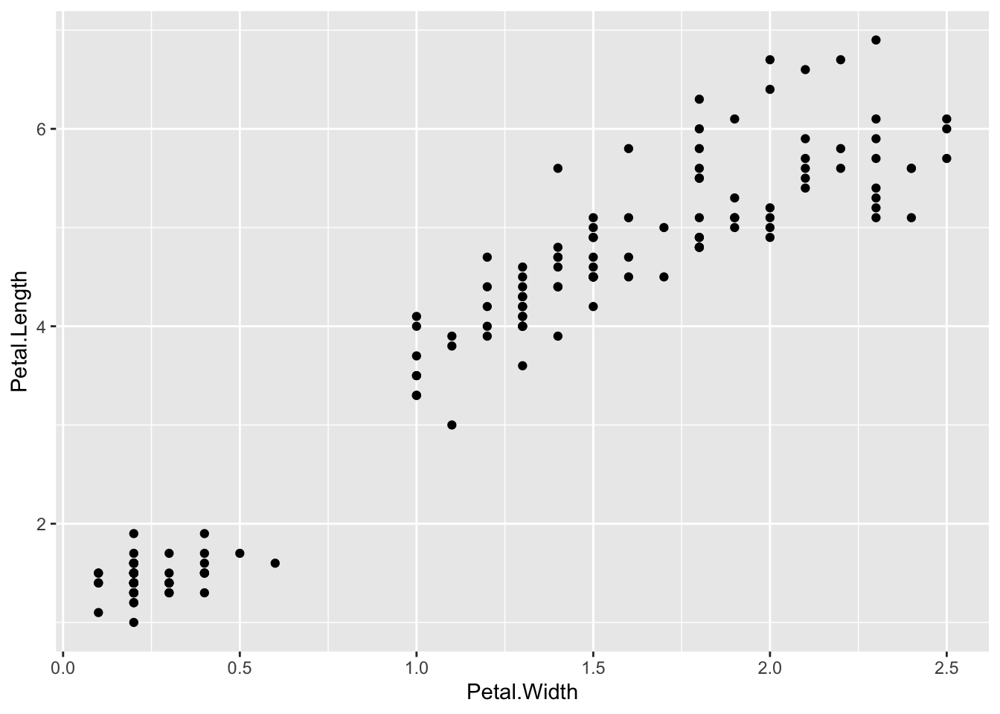
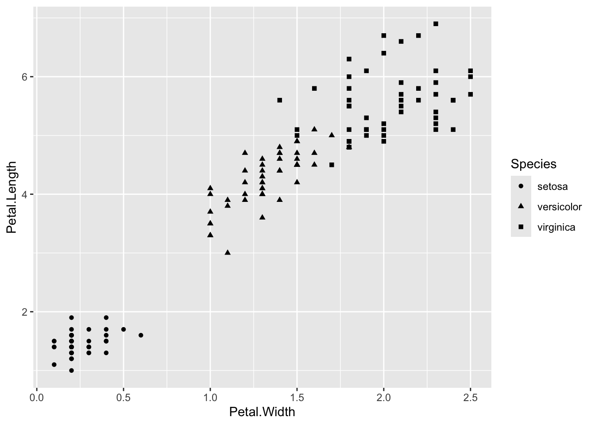
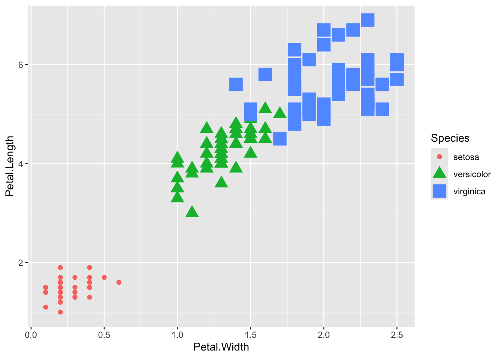

library(ggplot2)1 ggplot2 Tour
1.1 About this chapter
- Questions:
- How does ggplot2 work?
- Objectives:
- Explain the structure of a ggplot2
- Explain the flexibilty of the structure
- Keypoints:
- ggplot2 plots are made in user defined layers
- Using layers helps us to change plot types quickly or build progressively more complex charts
1.2 Building a plot with ggplot2
Loading ggplot2 into memory so we can use it is very easy. With RStudio started, and in the console window type:
Nothing should happen, thats a good sign!
1.3 It didn’t load - I got an error
You need to go back and look at the install instructions, using the packages tab in the bottom right hand window of R studio, click
installand typeggplot2into the window that appears. Selectinstalland it should automatically install. If this doesn’t work seek some expert help. {: .callout }
1.3.1 Loading the iris test data
R has some datasets built in that allow us to easily develop analysis. Let’s look at the iris data
iris Sepal.Length Sepal.Width Petal.Length Petal.Width Species
1 5.1 3.5 1.4 0.2 setosa
2 4.9 3.0 1.4 0.2 setosa
3 4.7 3.2 1.3 0.2 setosa
4 4.6 3.1 1.5 0.2 setosa
5 5.0 3.6 1.4 0.2 setosa
6 5.4 3.9 1.7 0.4 setosa
7 4.6 3.4 1.4 0.3 setosa
8 5.0 3.4 1.5 0.2 setosa
9 4.4 2.9 1.4 0.2 setosa
10 4.9 3.1 1.5 0.1 setosa
11 5.4 3.7 1.5 0.2 setosa
12 4.8 3.4 1.6 0.2 setosa
13 4.8 3.0 1.4 0.1 setosa
14 4.3 3.0 1.1 0.1 setosa
15 5.8 4.0 1.2 0.2 setosa
16 5.7 4.4 1.5 0.4 setosa
17 5.4 3.9 1.3 0.4 setosa
18 5.1 3.5 1.4 0.3 setosa
19 5.7 3.8 1.7 0.3 setosa
20 5.1 3.8 1.5 0.3 setosa
21 5.4 3.4 1.7 0.2 setosa
22 5.1 3.7 1.5 0.4 setosa
23 4.6 3.6 1.0 0.2 setosa
24 5.1 3.3 1.7 0.5 setosa
25 4.8 3.4 1.9 0.2 setosa
26 5.0 3.0 1.6 0.2 setosa
27 5.0 3.4 1.6 0.4 setosa
28 5.2 3.5 1.5 0.2 setosa
29 5.2 3.4 1.4 0.2 setosa
30 4.7 3.2 1.6 0.2 setosa
31 4.8 3.1 1.6 0.2 setosa
32 5.4 3.4 1.5 0.4 setosa
33 5.2 4.1 1.5 0.1 setosa
34 5.5 4.2 1.4 0.2 setosa
35 4.9 3.1 1.5 0.2 setosa
36 5.0 3.2 1.2 0.2 setosa
37 5.5 3.5 1.3 0.2 setosa
38 4.9 3.6 1.4 0.1 setosa
39 4.4 3.0 1.3 0.2 setosa
40 5.1 3.4 1.5 0.2 setosa
41 5.0 3.5 1.3 0.3 setosa
42 4.5 2.3 1.3 0.3 setosa
43 4.4 3.2 1.3 0.2 setosa
44 5.0 3.5 1.6 0.6 setosa
45 5.1 3.8 1.9 0.4 setosa
46 4.8 3.0 1.4 0.3 setosa
47 5.1 3.8 1.6 0.2 setosa
48 4.6 3.2 1.4 0.2 setosa
49 5.3 3.7 1.5 0.2 setosa
50 5.0 3.3 1.4 0.2 setosa
51 7.0 3.2 4.7 1.4 versicolor
52 6.4 3.2 4.5 1.5 versicolor
53 6.9 3.1 4.9 1.5 versicolor
54 5.5 2.3 4.0 1.3 versicolor
55 6.5 2.8 4.6 1.5 versicolor
56 5.7 2.8 4.5 1.3 versicolor
57 6.3 3.3 4.7 1.6 versicolor
58 4.9 2.4 3.3 1.0 versicolor
59 6.6 2.9 4.6 1.3 versicolor
60 5.2 2.7 3.9 1.4 versicolor
61 5.0 2.0 3.5 1.0 versicolor
62 5.9 3.0 4.2 1.5 versicolor
63 6.0 2.2 4.0 1.0 versicolor
64 6.1 2.9 4.7 1.4 versicolor
65 5.6 2.9 3.6 1.3 versicolor
66 6.7 3.1 4.4 1.4 versicolor
67 5.6 3.0 4.5 1.5 versicolor
68 5.8 2.7 4.1 1.0 versicolor
69 6.2 2.2 4.5 1.5 versicolor
70 5.6 2.5 3.9 1.1 versicolor
71 5.9 3.2 4.8 1.8 versicolor
72 6.1 2.8 4.0 1.3 versicolor
73 6.3 2.5 4.9 1.5 versicolor
74 6.1 2.8 4.7 1.2 versicolor
75 6.4 2.9 4.3 1.3 versicolor
76 6.6 3.0 4.4 1.4 versicolor
77 6.8 2.8 4.8 1.4 versicolor
78 6.7 3.0 5.0 1.7 versicolor
79 6.0 2.9 4.5 1.5 versicolor
80 5.7 2.6 3.5 1.0 versicolor
81 5.5 2.4 3.8 1.1 versicolor
82 5.5 2.4 3.7 1.0 versicolor
83 5.8 2.7 3.9 1.2 versicolor
84 6.0 2.7 5.1 1.6 versicolor
85 5.4 3.0 4.5 1.5 versicolor
86 6.0 3.4 4.5 1.6 versicolor
87 6.7 3.1 4.7 1.5 versicolor
88 6.3 2.3 4.4 1.3 versicolor
89 5.6 3.0 4.1 1.3 versicolor
90 5.5 2.5 4.0 1.3 versicolor
91 5.5 2.6 4.4 1.2 versicolor
92 6.1 3.0 4.6 1.4 versicolor
93 5.8 2.6 4.0 1.2 versicolor
94 5.0 2.3 3.3 1.0 versicolor
95 5.6 2.7 4.2 1.3 versicolor
96 5.7 3.0 4.2 1.2 versicolor
97 5.7 2.9 4.2 1.3 versicolor
98 6.2 2.9 4.3 1.3 versicolor
99 5.1 2.5 3.0 1.1 versicolor
100 5.7 2.8 4.1 1.3 versicolor
101 6.3 3.3 6.0 2.5 virginica
102 5.8 2.7 5.1 1.9 virginica
103 7.1 3.0 5.9 2.1 virginica
104 6.3 2.9 5.6 1.8 virginica
105 6.5 3.0 5.8 2.2 virginica
106 7.6 3.0 6.6 2.1 virginica
107 4.9 2.5 4.5 1.7 virginica
108 7.3 2.9 6.3 1.8 virginica
109 6.7 2.5 5.8 1.8 virginica
110 7.2 3.6 6.1 2.5 virginica
111 6.5 3.2 5.1 2.0 virginica
112 6.4 2.7 5.3 1.9 virginica
113 6.8 3.0 5.5 2.1 virginica
114 5.7 2.5 5.0 2.0 virginica
115 5.8 2.8 5.1 2.4 virginica
116 6.4 3.2 5.3 2.3 virginica
117 6.5 3.0 5.5 1.8 virginica
118 7.7 3.8 6.7 2.2 virginica
119 7.7 2.6 6.9 2.3 virginica
120 6.0 2.2 5.0 1.5 virginica
121 6.9 3.2 5.7 2.3 virginica
122 5.6 2.8 4.9 2.0 virginica
123 7.7 2.8 6.7 2.0 virginica
124 6.3 2.7 4.9 1.8 virginica
125 6.7 3.3 5.7 2.1 virginica
126 7.2 3.2 6.0 1.8 virginica
127 6.2 2.8 4.8 1.8 virginica
128 6.1 3.0 4.9 1.8 virginica
129 6.4 2.8 5.6 2.1 virginica
130 7.2 3.0 5.8 1.6 virginica
131 7.4 2.8 6.1 1.9 virginica
132 7.9 3.8 6.4 2.0 virginica
133 6.4 2.8 5.6 2.2 virginica
134 6.3 2.8 5.1 1.5 virginica
135 6.1 2.6 5.6 1.4 virginica
136 7.7 3.0 6.1 2.3 virginica
137 6.3 3.4 5.6 2.4 virginica
138 6.4 3.1 5.5 1.8 virginica
139 6.0 3.0 4.8 1.8 virginica
140 6.9 3.1 5.4 2.1 virginica
141 6.7 3.1 5.6 2.4 virginica
142 6.9 3.1 5.1 2.3 virginica
143 5.8 2.7 5.1 1.9 virginica
144 6.8 3.2 5.9 2.3 virginica
145 6.7 3.3 5.7 2.5 virginica
146 6.7 3.0 5.2 2.3 virginica
147 6.3 2.5 5.0 1.9 virginica
148 6.5 3.0 5.2 2.0 virginica
149 6.2 3.4 5.4 2.3 virginica
150 5.9 3.0 5.1 1.8 virginicaR just printed the whole thing to screen and we end up looking at just the bottom end of it. Let’s look at just the top.
head(iris) Sepal.Length Sepal.Width Petal.Length Petal.Width Species
1 5.1 3.5 1.4 0.2 setosa
2 4.9 3.0 1.4 0.2 setosa
3 4.7 3.2 1.3 0.2 setosa
4 4.6 3.1 1.5 0.2 setosa
5 5.0 3.6 1.4 0.2 setosa
6 5.4 3.9 1.7 0.4 setosaWe can see that we have the top six rows and we can see that the data is a list of measurments of the sepals and petals for some species of iris. Let’s get a summary of the data set:
summary(iris) Sepal.Length Sepal.Width Petal.Length Petal.Width
Min. :4.300 Min. :2.000 Min. :1.000 Min. :0.100
1st Qu.:5.100 1st Qu.:2.800 1st Qu.:1.600 1st Qu.:0.300
Median :5.800 Median :3.000 Median :4.350 Median :1.300
Mean :5.843 Mean :3.057 Mean :3.758 Mean :1.199
3rd Qu.:6.400 3rd Qu.:3.300 3rd Qu.:5.100 3rd Qu.:1.800
Max. :7.900 Max. :4.400 Max. :6.900 Max. :2.500
Species
setosa :50
versicolor:50
virginica :50
Alright, that’s quite clear, some summary values for each numeric column and note how R has calculated the number of rows of each distinct label for the text column.
1.3.2 A first plot
ggplot2 plots are built up of layers, the foundation layer is the data layer, thats the whole data set containing the bits we would want to plot. We define that with the ggplot2 command.
library(ggplot2)
ggplot(data=iris)
Nothing happened, you got a blank screen in the plot window to the right. That’s because a data layer alone doesn’t tell us what, or how to plot. It’s just the source of the numbers we’ll use.
The next thing we need is an aesthetic layer. This is basically the things to look at, and includes:
1. x and y axes (sometimes called position)
2. colour (the line colour of a thing)
3. fill (the block colour of a thing)
4. shape (e.g of points)
5. line type
6. size (e.g of points)Let’s decide to look at petal width and length. We use the aes() function for the aesthetic and we can add layers together with the + operator.
ggplot(data=iris) + aes(x=Petal.Width, y=Petal.Length)
This time we get axes in the plot window. ggplot now knows the data source and the things that should be displayed on the axis, but it doesn’t fully know how to display them. That is done in the geom (or geometric objects) layer. There are loads of geoms e.g
1. `geom_point()` for scatter plots
2. `geom_line()` for trend lines
3. `geom_boxplot()` for boxplots!Let’s add a geom layer.
ggplot(data=iris) + aes(x=Petal.Width, y=Petal.Length) + geom_point()
Now we see the whole plot. The data has been mapped onto the right axes and the geometric objects on top of that. Let’s go crazy and add more layers.
ggplot(data=iris) + aes(x=Petal.Width, y=Petal.Length) + geom_point() + geom_line()
You can see the new geom just adds straight on top of the old one. By default, geom_line() is a simple join the dots sort of line, so it looks really squiggly. Different layers can have their own options set, e.g the points can be coloured.
ggplot(data=iris) + aes(x=Petal.Width, y=Petal.Length) + geom_point(colour="Red") + geom_line()
1.4 Making and saving a base plot
There is actually no need to go round typing in the whole command above repetively all the time. ggplot2 layers can be saved to R variables like this:
p <- ggplot(data=iris) + aes(x=Petal.Width, y=Petal.Length)and the bits we want to add or change stuck on top:
p + geom_point()
1.5 Mappings versus assignment
The power of ggplot to ‘just do the right thing’ comes from its use of mappings, these can be thought of as rules for what to do when it meets a bit of data in a particular place.
Above we set the colour, geom_point() to "Red". This set all the points to red, it was an assignment, since ggplot didn’t have anything to work out, every point is just red. By setting the colour to a column in the data we can make ggplot work colours out for us dependent on the information in that column. Try:
p <- ggplot(data=iris) + aes(x=Petal.Width, y=Petal.Length)
p + geom_point(aes(colour=Species))
This time we told ggplot to use the value of the Species column to colour each data point, ggplot decided on a mapping for a list of colours to each different value in the Species column and drew that on the plot for us. Only aesthetics can be mappings, so we had to use an aes() function inside the geom.
Lots of aesthetic features can be mapped to data, try size and shape, and try mixing them.
p + geom_point(aes(size=Species))Warning: Using size for a discrete variable is not advised.
p + geom_point(aes(colour=Species))
p + geom_point(aes(shape=Species))
p + geom_point(aes(size=Species,colour=Species,shape=Species))Warning: Using size for a discrete variable is not advised.
1.6 Quiz
- Use the docs at http://docs.ggplot2.org/current/ to examine the geoms that are available. Try
geom_jitter(), why choose this overgeom_point()? - Use this base plot
p <- ggplot(data=iris) + aes(x=Petal.Width, y=Petal.Length) - What happens if you map a continuous variable to an aesthetic like colour? EG
aes(color=Petal.Width) - Try combining
geom_smooth()withgeom_jitter() - Why doesn’t
geom_boxplot()work with a continuous varialbe like Petal.Width? (Hint: you need to think about the difference between categorical or discrete and continuous data). - How could you make
geom_boxplot()show you box plots for the three species Petal.Width. (Hint: you need to think about the aesthetic and where you set it.